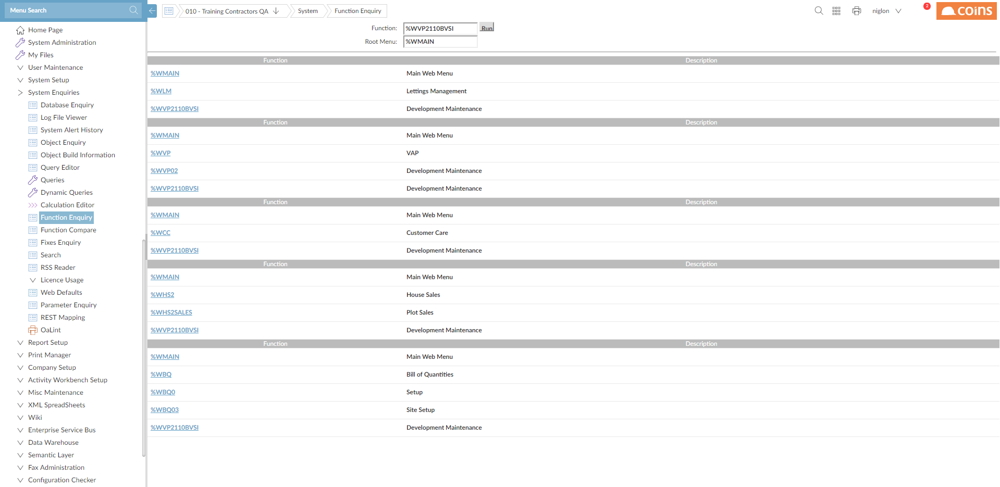

Finding Functions
There are various ways to find specific functions in :
- Function allows you to find which menu or menus a function is on.

- This is also available from within Function Maintenance.
The Search box on the Desktop also allows you to find and run functions.

For more information, see Desktop.